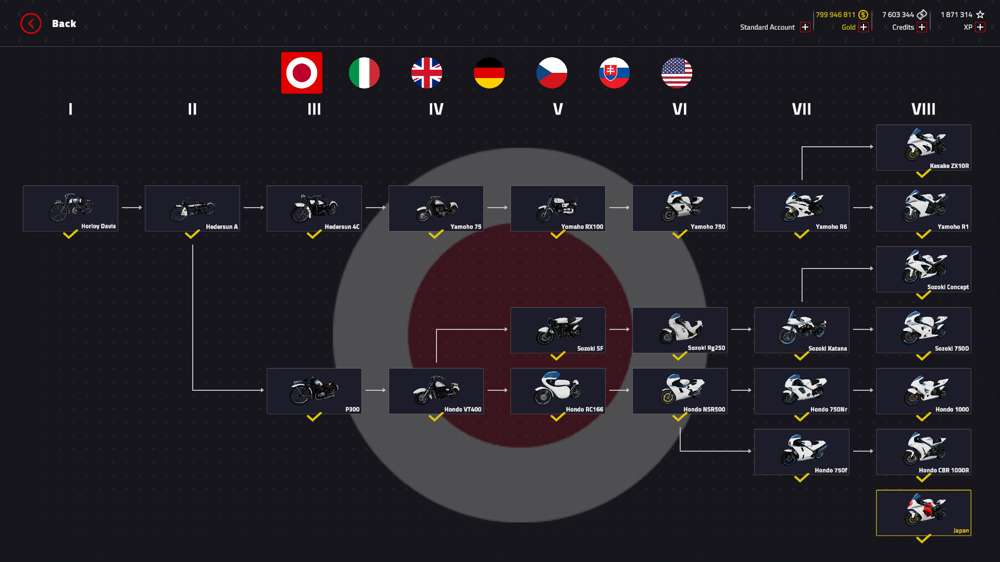
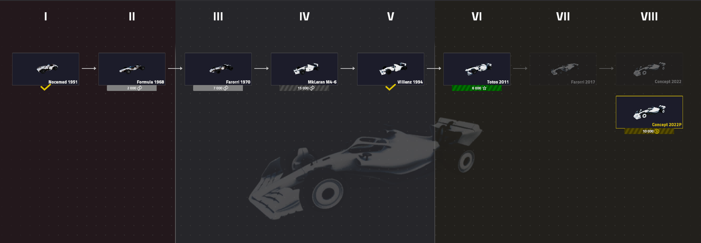

In diesem Game gibt es viele verschiedene Fahrzeuge. Diese Fahrzeuge
sind in zwei Gruppen unterteilt, Motorräder und Formel 1 Autos. Diese
Fahrzeuge sind nochmal unterteilt nach Ländern. Sobald man ein Land
ausgewählt hat, kann man in diesem die Progression spielen. Um ein neues
Auto zu kaufen braucht man eine bestimmte Menge an Erfahrungspunkten und
dann noch das nötige Geld um es zu kaufen. Jedes neue Fahrzeug, das
gekauft wird ist ein moderneres Model, von dem kommt auch der Name des
Spiels, Engine Evolution. Die besten und schnellsten Fahrzeuge können
aber nur mit Echtgeld gekauft werden. Somit gibt es immer etwas neues zu
entdecken und besseres freizuschalten.


Diese Webseite wurde ermöglicht durch Passivkonto GmbH, Wir danken ihnen
für ihre Mitarbeit und aktive Kooperation.